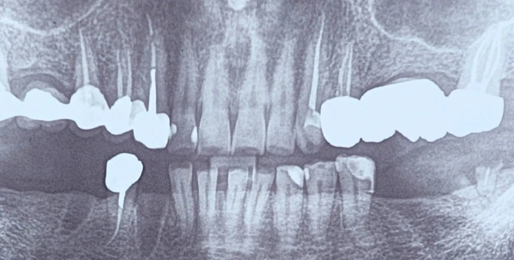

Chairside 20
وقتی مجهولبودنِ یک پایه، دیگر قابلقبول نیست

بیمار با نامهی ارجاع مراجعه کرد. در یادداشتِ دندانپزشکِ ارجاعدهنده، قید شده بود که بیمار برای فکِ پایین بهعلتِ مصرفِ بیسفسفونات، منعِ ایمپلنت دارد؛ این منع در نامهی پزشک هم ذکر شده بود. بیمار سابقهی رادیوتراپیِ ناحیهی سینه هم داشت. از همان ابتدا ایمپلنت از مسیرِ درمانِ فکِ پایین حذف شد و درمان به سمتِ پروتزِ پارسیل رفت.
سوالِ بعدی این بود که پروتزِ پارسیل، اینتریم باشد یا definitive. اینتریم کنار گذاشته شد؛ چون منطقِ اینتریم وقتی برقرار است که یک افقِ زمانیِ مشخص وجود داشته باشد — یعنی پزشک گفته باشد منع تا تاریخِ مشخصی برقرار است و بعد از آن بازبینی میشود. در این بیمار چنین تاریخی تعیین نشده بود. منعی که سرِ بسته باشد، عملاً مثلِ یک منعِ طولانیمدت است؛ بنابراین تصمیم به سمتِ پارسیلِ definitive رفت.
قدمِ اول همانی بود که باید باشد: تهیهی PA از پایهها. پانورامیک برای قضاوت روی یک پایه کافی نیست؛ اطلاعاتِ اپیکال، مارجین و کیفیتِ اندو را در این حد نمیدهد.
سپس به روکشِ دندانِ ۴ پایینِ راست رسیدیم. تصمیم این بود که روکش عوض شود، حتی اگر رادیوگرافیک ایدهآل بهنظر برسد. دلیلِ اولیه مکانیکی بود: روکش باید با مسیرِ نشستوبرخاستِ پارسیل بخواند، پلنِ راهنما و رستسیتِ درست داشته باشد، و فرول و کیفیتِ خودِ روکش هم اهمیت دارند. اما هیچکدامِ اینها بهتنهایی روکش را به تعویض، اجباری نمیکند؛ خیلی از این موارد را میشود داخلِ دهان اصلاح کرد.
دلیلِ اصلی جای دیگری بود. اصولاً زیرِ هیچ درمانی مجهول گذاشته نمیشود؛ و در این بیمار این قاعده فقط سفتتر شد، چون شرایطِ بیمار وخیمتر است. در بیمارِ مصرفکنندهی این دارو، پایهای که بعداً fail شود یعنی کشیدنِ دندان، و کشیدن دقیقاً همان محرکِ اصلیِ استئونکروزِ فک (MRONJ) است. پس زیرِ پایهای که قرار است تحتِ فشار باشد، اجازهی هیچ مجهولی نیست. روکشی که شناختهشده نیست — وضعیتِ پست و کور، فرول، مارجین و پوسیدگیِ زیرِ آن مشخص نیست — نمیتواند پایهای باشد که قرار است سالها نیروی پارسیل را تحمل کند. به همین دلیل روکش باز میشود و دیده میشود؛ نه چون مکانیکِ پارسیل آن را اجبار میکند، بلکه چون در این بیمار هزینهی fail شدن، غیرقابلِ قبول است.
روندِ رسیدن به این تصمیم به این ترتیب بود:
- حذفِ ایمپلنت از مسیرِ درمانِ فکِ پایین، به دلیلِ مصرفِ بیسفسفونات و سابقهی رادیوتراپیِ سینه.
- انتخابِ پارسیلِ definitive بهجای اینتریم، چون منعی با افقِ زمانیِ مشخص وجود نداشت.
- تهیهی PA از پایهها برای ارزیابیِ دقیق، نه پانورامیک.
- تصمیم به بازکردنِ روکشِ دندانِ ۴ پایینِ راست، نه به دلیلِ اجبارِ مکانیکیِ پارسیل، بلکه برای حذفِ مجهول زیرِ یک پایهی تحتِفشار.
️زیرِ هیچ درمانی نباید مجهول گذاشت؛ و این قاعده هرچه پیامدِ شکست سنگینتر باشد، سفتتر میشود، نه سستتر.
️بیسفسفونات این قاعده را نساخت؛ فقط حاشیهی امنی را برداشت که معمولاً برای نادیدهگرفتنِ یک مجهول وجود دارد.
محتوای این صفحه برای استفادهٔ آموزشی دندانپزشکان و دانشجویان دندانپزشکی تهیه شده است.